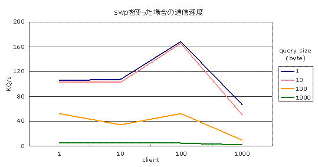
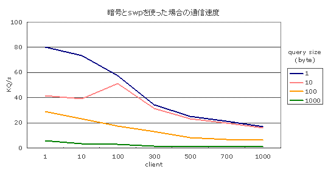

このページは、VCEミドルウェアの通信速度を測定するベンチマーク結果の 一部である。SWP とはVCEの最高性能を向上させるための中継サーバである。 SWP を使用することによって、サーバアプリケーション全体の最大性能が 大幅に向上する。 SWP を使用しない版のベンチマークはこちら。 このページでは、SWP を用いたときの最大性能を測定する。
vce/bench/swpにベンチマークがあるので、そのディレクトリに移動する。 benchsv.cがサーバプログラム、benchcl.cがクライアントプログラムで、 このプログラムを編集して通信のための設定をおこなう。 swpの設定はswtable.confと benchsv.cを開き、使用するポート番号と暗号の設定をおこなう。 ポート番号はportnum変数の値を指定することでおこなう。
unsigned short portnum = 23456;通信に使用する暗号の設定はcipher変数の値を指定することでおこなう。
VCE_BLOCK_CIPHER cipher = VCE_BLOCK_CIPHER_NONE;次にswpの設定をおこなう。 swtable.confを開きサーバのIPアドレスとポート番号の設定をおこなう。
server=192.168.1.207,23456詳しくはSWP 機能解説 を 参照していただきたい。 vpbench.confを開き、swpのポート番号と暗号の設定をおこなう。 ポートの設定は
frontend_bind_port=23457のようにおこない、暗号の設定は
server_cipher=noneのようにおこなう。 benchcl.cを開き、swpのIPアドレスとポートの番号と暗号の 設定をおこなう。 ポート番号はportnum変数の値を指定することでおこなう。
unsigned short portnum = 23457;サーバのIPアドレスの設定はhost変数の値を指定することでおこなう
char host[] = "192.168.1.20";通信に使用する暗号の設定はcipher変数の値を指定することでおこなう。
VCE_BLOCK_CIPHER cipher = VCE_BLOCK_CIPHER_NONE;サーバプログラムのコンパイルはsv0シェルスクリプトを実行することで おこなう。
$ ./sv0s.outという実行ファイルが生成されるので、サーバマシンでs.outを 実行する。
$ ./s.out &swpを起動するにはrunswシェルスクリプトを実行する。
$ ./runsw
クライアントプログラムの実行はcl*_*シェルスクリプトを実行することで おこなう。（*には0〜3の値が入る。）*の値によって通信速度を測定する ときのパラメータが変わってくる。それは次の表のとおりである。
| query size＼client | 1 | 10 | 100 | 999 |
| 1 | cl0_0 | cl0_1 | cl0_2 | cl0_3 |
| 10 | cl1_0 | cl1_1 | cl1_2 | cl1_3 |
| 100 | cl2_0 | cl2_1 | cl2_2 | cl2_3 |
| 1000 | cl3_0 | cl3_1 | cl3_2 | cl3_3 |
$ ./cl2_3と入力する。 それにより、c.outという実行ファイルが生成され、指定したパラメータで、 測定を開始する。 測定結果はサーバ側のコンソールとs.txtファイルに10秒間ごとに次のように 出力される。
circ size = 10 recieved querry = 94638 query / sec = 9463.800000 byte / sec = 9463800.000000
circ sizeはクライアント数を表し、recieved querryは10秒間にどのくらいの Queryを受信したかを表す。query / secは1秒間に何Queryを受信したかを 表す値である。byte / secは1秒間に何バイトの送受信がおこなわれたかを示す 値である。 急に送信量を増やすと接続が途切れるため、通信量は徐々に増加するように なっており、初期パラメータでは最高性能に到達するまで数十分かかることも ある。そこでbenchcl.cのcoefficientの値を必要に応じて大きくしたり 小さくしたりすることで調節をおこなう。coefficientの値を大きくすると 送信量が増える割合が大きくなり最高性能に到達する時間が早くなるかわりに 接続が切れやすくなる。coefficientの値を小さくすると最高性能に到達する 時間が遅くなるかわりに接続が切れにくくなる。
測定を終了する場合は、クライアント側のコンピュータでは
$ killall c.out
と入力してクライアントプログラムを終了させる。
中継サーバのコンピュータでは
$ killall swp
としてswpを停止させる。
サーバ側のコンピュータでは、
$ killall s.outと入力してサーバプログラムを停止させる。
クライアントと中継用サーバにはPentium4 2GHzのCPUをもつPCを使い、 サーバにPentium4 2.8GHzのCPUをもつPCを接続して測定をおこなった。 以下の表が、暗号は用いないでswpを使用して通信をおこなった場合の ベンチマーク結果である。
| query size＼client | 1 | 10 | 100 | 1000 |
| 1 | 106 | 108 | 168 | 67.0 |
| 10 | 103 | 103 | 166 | 51.0 |
| 100 | 53.0 | 34.0 | 52.4 | 10.0 |
| 1000 | 5.70 | 5.60 | 5.69 | 1.85 |
縦軸はquery sizeで送受信するQueryのbyte数をあらわす。
横軸はクライアント数である。通信速度は秒間に何kQ送受信できたかを
表す値で単位はkQ/sである。
Queryサイズごとにクライアント数を変化させた場合のグラフは
以下のとおりである。

暗号(RIJNDAEL/16)をswpとクライアントの間に使用した場合の
ベンチマーク結果は以下のとおりである。
| query size＼client | 1 | 10 | 100 | 300 | 500 | 700 | 1000 |
| 1 | 80.5 | 73.5 | 57.6 | 34.3 | 25.2 | 21.4 | 16.7 |
| 10 | 41.9 | 39.2 | 51.1 | 31.5 | 23.7 | 20.2 | 15.9 |
| 100 | 28.8 | 23.5 | 17.3 | 13.3 | 8.55 | 7.33 | 6.03 |
| 1000 | 5.63 | 3.58 | 2.98 | 1.7 | 1.43 | 1.19 | 1.18 |
縦軸はquery sizeで送受信するQueryのbyte数をあらわす。
横軸はクライアント数である。通信速度は秒間に何kQ送受信できたかを
表す値で単位はkQ/sである。
Queryサイズごとにクライアント数を変化させた場合のグラフは
以下のとおりである。

Queryサイズが100、クライアント数が500の場合swpは100%に近いCPUパワーを
消費している。この時点でサーバのCPUパワーの消費は10%以下なので、
大きいQueryサイズの場合は符号化、複合化にほとんど時間を取られており
そこがボトルネックになっていると考えられる。
SWP を使わない場合の暗号あり通信の性能は、1000クライアント、10バイト/Query時で 10.9Kq/secであった。それに対し、 SWPありの場合は、15.9 であった。 この値を見ると、SWPによって約50%だけ性能が向上するように見えるが、 もっとも重要なのは、SWPを使っている時は本体サーバのCPU利用率が10%以下と低い点である。 以下に、10バイト/query, 1000クライアント時のデータを比較した。
| サーバ側CPU | SWP側CPU | kQ/sec | |
| SWPあり | 5% | 100% | 15.9 |
| SWPなし | 100% | -- | 10.9 |
次は、SWPを複数個同時に使用して最高性能を測定したい。
ただし、実際のアプリケーション開発においては、1秒あたりのクエリ処理数
を厳密に最大化するよりも、SWPによって余ったCPUパワーを処理内容の高度化
のために使うことが多い。